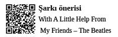

Network Profesyonelleri
Sanal ilişkilerin, yüzeysel samimiyetlerin, afili
kartvizitlerin efendileridir network profesyonelleri
Profesyonel iş dünyası nefesini; bireyi güçlendirmek, kişisel gelişimine önayak olmak için harcarken; söz konusu bireyin özgürleşmesi, bağımsız hareket etmesi olduğunda sistemin nefesi yetmemekte...
Profesyonel iş dünyasının asma bahçelerinde üzüm yiyebilmek için; iyi bir kulübün üyesi olup, doğru anahtarları doğru zamanlarda alıp, aldığın anahtarlarla doğru kapıları açıp üst seviyelere çıkmak, aşağıdan gelen doğru adaylara da anahtar dağıtmak gerekiyor. Bu uğurda gidilmesi gereken yolun, alınması gereken aksiyonların detaylı açıklaması network profesyonellerinin başuçlarından eksik etmedikleri kişisel gelişim kitaplarında yer alıyor.